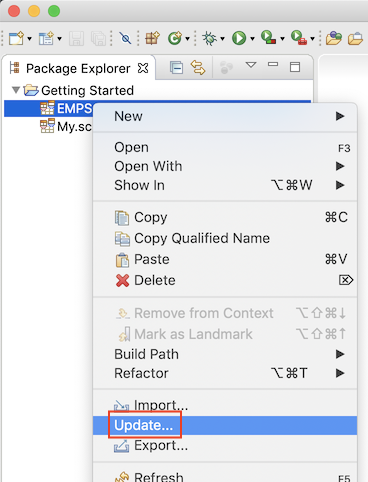
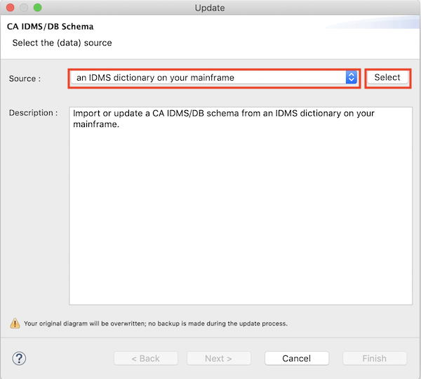

Updating Diagrams
To prevent you from having to create a new diagram when you have modified a schema in the IDMS dictionary, the diagram
editor provides an update feature. Just right-click on a diagram in the Package Explorer view to open the
Update wizard :

The Update wizard is actually very similar to the Import wizard; on the
first page you'll need to check the source from which to update your diagram. Select a source and confirm by pressing
the Select button :

The Next button will be enabled only after you have selected a source and confirmed your selection
with the Select button.
The possible sources are the same as for the Import wizard :
- An IDMS dictionary on your mainframe
- A file that contains CA IDMS/DB schema syntax
If you have developed your own custom import functionality, (an)other source(s) will be listed as well.
Mind the important warning message at the bottom of the wizard page : if you're not using a version control
system like GIT or Subversion, I strongly advise you to create a copy of your .schema or .schemadsl file before
updating your diagram. If something goes wrong while updating your diagram, you'll have something to revert to. Have a
look at this
blog post to
see how easy it is to start using GIT for your IDMS diagrams.
All remaining pages are the same as for the Import wizard, with the exception that no record layout manager has
to be selected; any new records will be placed on the right side of your existing diagram.